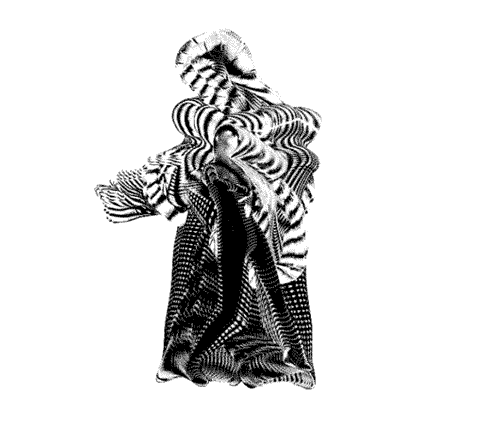

NEW MEETINGS - Invitation to participate
Hello!
I am debuting a new experimental VR performance piece, called
NEW MEETINGS, at the
upcoming ONX
showcase (in partnership with Tribeca), and am seeking some
wonderful participants/collaborators/interlocutors!
In short short, it is: experimental conversations performed between two
people in a shared dynamic Virtual Reality space which will be streamed and later edited into short video
work.
In longer: you would share a virtual space with me, one-on-one, for about
20 minutes, one day between June 9-20. We will both be in a VR setup, physically set up at ONX studio (645
5th Ave, New York, NY). There is nothing you need to do or know in advance to prepare, and you don't need
to be a performer, but you should feel comfortable being guided through a set of open-ended poetic
conversational prompts. You can think of it a bit like we'll be following a Fluxus
score or a having a Bohm
dialogue. During the experience, your identity will be
anonymized unless you choose to share it - in fact, I won't even know who you are (until after) because
we'll be in different rooms! (you'll be in a private space upstairs)
Together, we'll be co-creating a 2D screen-based artwork in real-time
generated by our conversation and movement, streamed onto a screen at ONX and online for a small live
audience. These will be edited together at a later date into a video piece.
There is a stipend ($50) available for your participation, nothing will be
included in the edited video without your permission, and you will have a credit in the final work (should
you choose to be included!). You can also have the full video of our conversation if you'd like it!
My wish for all participants: it will be a kind of hopeful new connection
at a transitional moment in time! My wish for the audience: an invitation to appreciate the miraculous
possibilities in different ways of connecting.
If you would like to participate, please fill out this form.
Feel free to share with others who might want to participate!
🖤Sarah (Rothberg, in case someone sent this to
you)
More info about the project can be found here
